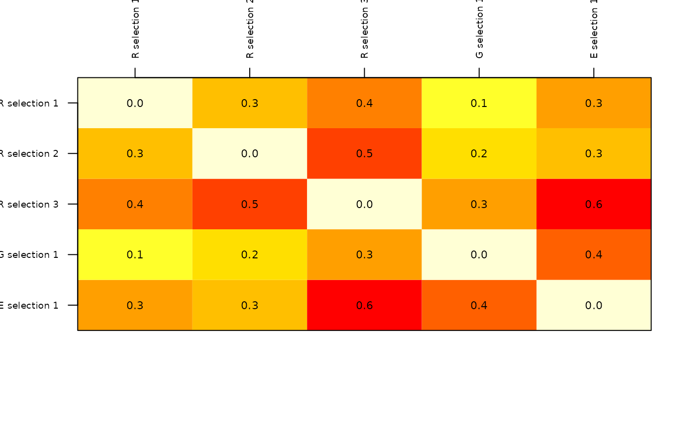

R/DI_plot_helpers.R
plot_DI.RdCreates matrix-like plots of dissimilarities found among communities of species in distinct sites selected or sets of sites selected for sampling.
plot_DI(DI_selected_sites, selection_type = "selections", selection_number = 1, values = TRUE, col = heat.colors(12, rev = TRUE), xlab = "", ylab = "")
| DI_selected_sites | list of results obtained with function
|
|---|---|
| selection_type | type of selection to be considered when creating DI matrix plot. Options are: "selections", "random", "E", "G", and "EG". The default, "selections", plots a comparison among all selection types. |
| selection_number | (numeric) number of selection to be plotted.
Default = 1. Ignored if |
| values | (logical) whether or not to add values of dissimilarity. Default = TRUE. |
| col | a list of colors derived from a palette. Default =
|
| xlab | (character) label for x axis of plot. Default = "Number of sites". |
| ylab | (character) label for y axis of plot. Default = "Species". |
A plot of a matrix of dissimilarities among sites selected for sampling, or among sets of sampling sites selected. Random is abbreviated as "R" in labels.
# Data data("b_pam", package = "biosurvey") data("m_selection", package = "biosurvey") # Subsetting base PAM according to selections sub_pam_all <- subset_PAM(b_pam, m_selection, selection_type = "all") # Calculating dissimilarities DI_sel <- selected_sites_DI(sub_pam_all)#>#>#> #>#>#> #>#>#># Plotting plot_DI(DI_sel)